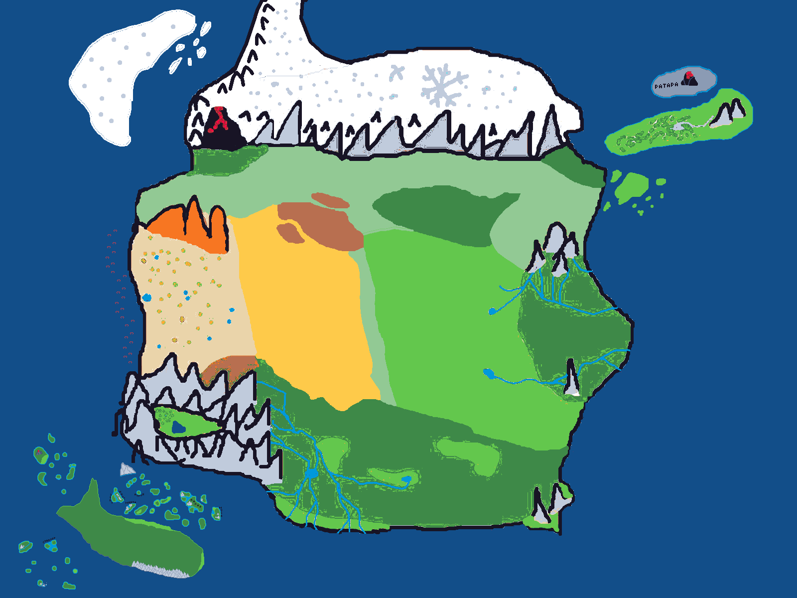

Карта Хэуврохиос
Решил попробовать сделать в Paint'е, для начала. Потом может будет что-то более интересное. Со временем конечно улучшу эту версию. Но много не ждите. А пока вот держите предварительный вариант:
В общем в центре это поля и равнины (светло-зелёный). Северней есть "небольшой" лес, рядом болота. Можно сделать чтобы болото было окружено полосой леса.
На севере горная цепь или даже вытянутое горное плато - Лота́нэсэр Но́рэр (Серые Горы).
На западе есть большой, широкий, черный вулкан - Тэрко́нор (Тёмная Гора). Его окружают относительно небольшие горы. Южнее от них находится небольшой тёмный лес.
На востоке от гор есть небольшой перешеек земли, между самой восточной горой и водой. Там растет небольшой лес.
Северней Лотанэсэр Норэр находится Эла́ракэсэр Ма́рсэр (Холодные Земли). Они уходят далеко. Местность достаточно холмистая. Я сделал довольно ровный берег. Лучше пускай будет немного изрезан и с левой стороны там будет полуостров, заворачивающий к востоку и заканчивающийся острым концом, а с правой стороны будет просто выпуклость, пускай будет как сейчас.
На западном побережье полуострова пускай будут холмы и низкие горы, которые идит и по полуострову. Восточнее они переходят в небольшой лес. На выпуклой стороне тоже можно сделать небольшой лес, вытянутой дугой к северу.
Восточней от центральных равнин. Находится Саи́тэс Рито́с (Восточный Лес). Он слегка холмистый, и изрезан реками.
На картинке нет, но чуть западней, до леса на равнине, стоят 3-4 горы. С них стекают реки, которые пронизывают лес.
Северней, разделяя лес и степь находятся Эно́рэсэр Норэр (Малые Горы), за ними каньоны. С них также стекают реки.
На востоке есть фьорд.
На юге, от леса, стоит Одинокая Гора, этаки немного скала.
Южнее равнин, есть огромный У́нкэс Ритос (Южный Лес). Также как на картинке между ним и Саитэс Ритос есть значительные равнины. Там холмы. И он также простирается почти ровной линией, с лёгким загибом на север. В самом лесу есть несколько полей.
На востоке есть пара небольших гор, стоящие на равнинах. Южнее от них есть небольшая равнина.
На северо-западе есть небольшие Сухие Болота.
На западе от Ункэс Ритос есть горное плато - Кольцевые Горы, в виде кольца, или скорее сплюснутого овала. Горы, с южной и западной стороны, стоят прямо в воде, переходя в скалы. Внутри, "кольца" гор, есть небольшая поляна, с озером и рощей леса, ближе к западу. Прямого прохода к поляне нет, и она расположена высоко над уровнем моря. С них стекают реки, и они простираются далеко на восток, до половины леса, и на юг, в море. Кое-где образуется озёра, как те что заканчивают реку, так и те, из которых вытекают реки. На северо-востоке есть три склона на которых растёт много стираксов.
Западней от равнин располагается Тусти́р (Пустыня). Внутри есть много оазисов. Большие дюны.
Северней, находятся Рэлто́сэсэр Норэр (Рыжие Горы), они правда рыжие. Их не много, 4-5 гор, с ровными вершинами и крутыми склонами. На западе, есть небольшой перешеек земли между пустыней и равнинами. Позади гор также пустыня немногим продолжается.
Острова
На юго-западе есть большой остров - Кит (Кит). Он покрыт лесом. На севере от него есть множество скал и маленьких, голых островков, до континента.
Северо-западней также есть небольшое количество рифовых островков, вулканического происхождения. Ну, 12 островков и скал будет достаточно.
Ну и юго-западней, поодаль от острова, есть несколько скал. И несколько, 5-7, средних островов. Голые, но два достаточно велики для травы.
Северо-восточней есть небольшой остров - Нинэ́сэс Мэла́ни (*Новая Надежда*). Северней от него - Раса́р (*Пепел*). Нинэсэс Мэлани в основном ровный остров, с редким лесом. Ближе к востоку появляются пологие холмы, которые заканчиваются двумя горами. От гор течет одна река и заканчивается небольшим озером в центре леса. Расар маленький, безжизненный вулканический остров.
Немного западней от северной части Тустир, чуть ниже Рэлто́сэсэр Норэр, в море, находятся группа островов, из называют - Си́нэсэр Ио́слэрурэр (Зелёные острова). Густая группа островов, средних размеров, тропического климата, количество - 9. Самый большой, находится северо-западней от центра группы, называется - Нора́сэс Олиуи́н, на нем находится потухший вулкан. На них, много изумрудов и оливина.
Ещё дальше на запад, чуть южнее, приблизительно по центру Тустир, находится ещё один небольшой остров, раза в два больше Норасэс Олиуина. Овальной формы, вытянут по горизонтали. Он в основном покрыт травой и редкими деревьями, пальмами.
И ещё дальше на запад, и более южнее, приблизительно рядом с южной частью Тустир, находится последний остров, таких же размеров как и предыдущий и такой же местности. Имеет округлую форму и бухту на северо-востоке, в целом, как надкусанное яблоко.
Приблизительные размеры.